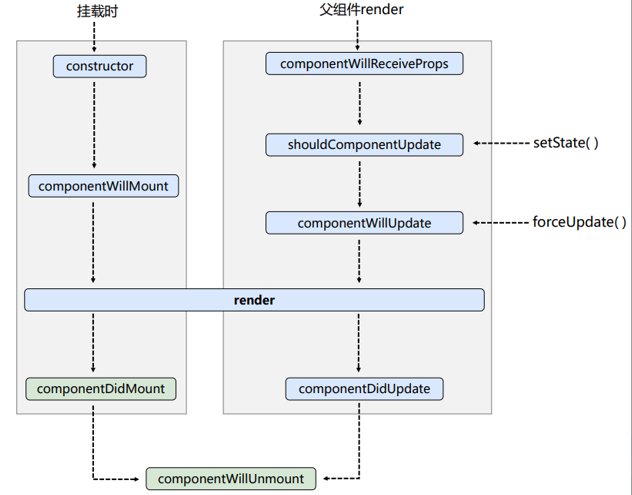
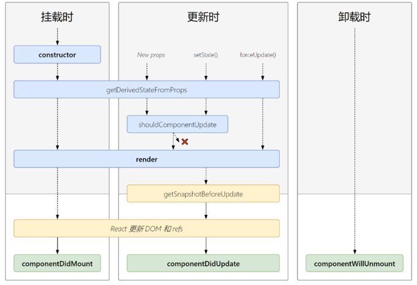
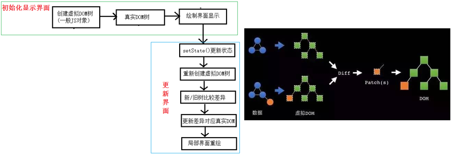

xxxxxxxxxx131// 1.创建函数式组件2function MyComponent(){3 console.1og(this); //此处的this是undefined,因为babe1编译后开启了严格模式，不会默指向windows4 return <h2>我是用函数定义的组件(适用于[简单组件]的定义)</h2>5}6// 2.渲染组件到页面7ReactDOM.render(<MyComponent/>, document.getElementById('test'))8/*9 执行了ReactDOM. render( <MyComponent/>......之后，发生了什么?10 1.React解析组件标签，找到了MyComponent组件。11 2.发现组件是使用函数定义的，随后调用该函数，将返回的虚拟DOM转为真实DOM，随后呈现在页面中。12*/13
xxxxxxxxxx181//1.创建类式组件2class MyComponent extends React.Component {3 render(){4 //render是放在哪里的? - - MyComponent的原型对象上，供实例使用。5 //render中的this是谁? - MyComponent组件实例对象。6 console.1og('render中的this: ' ,this);7 return <h2>我是用类定义的组件(适用于[复杂组件]的定义)</h2>8 }9}10//2.渲染组件到页面11ReactDOM.render(<MyComponent/>, document.getElementById('test'))12/*13 执行了ReactDOM.render(<MyComponent/.......之后，发生了什么?14 1. React解析组件标签，找到了MyComponent组件。15 2.发现组件是使用类定义的，随后new出来该类的实例，并通过该实例调用到原型上的render方法。16 3.将render返回的虚拟DOM转为真实DOM，随后呈现在页面中。17*/18
组件中render方法中的this为组件实例对象
组件自定义的方法中this为undefined，如何解决？
状态数据，不能直接修改或更新
xxxxxxxxxx221//1.创建组件2class Weather extends React.Component{3 constructor(props){4 super(props)5 //初始化状态，里面是对象6 this.state = {isHot:false}7 }8 render(){9 //读取状态10 const {isHot} = this.state11 return <h1 onClick={this.changeWeather}>今天天很{isHot ? '炎热' : ' 凉爽'}</h1>12 }13 changeWeather(){14 // changeWeather放在哪里?一Weather 的原型对象上，供实例使用15 //由于changeWeather是作为onClick的回调，所以不是通过实例调用的，是直接调用16 //类中的方法默认开启了局部的严格模式，所以changeWeather中的this为undefined17 console.log(this)18 }19}20//2.渲染组件到页面21ReactDOM.render( <Weather/>，document. getElementById('test'))22
constructor，render中this指向实例对象，但是自定义函数中是undifined，那么如何解决自定义函数中this问题？
方法一：在构造器中绑定this
xxxxxxxxxx61constructor(props){2 super(props)3 //初始化状态，里面是对象4 this.state = {isHot:false}5 this.changeWeather = this.changeWeather.bind(this)6}方法二：使用箭头函数
在下面状态修改中给出
这个方法在React.Component的原型对象上
xxxxxxxxxx31// 严重注意:状态必须通过setState进行更新,且更新是一种合并，不是替换。2// 所以只需要设置需要变化的值就好了3this.setState({isHot: !isHot})xxxxxxxxxx191//1.创建组件2class Weather extends React . Component{3 //初始化状态4 state = {isHot :false ,wind: '微风'}5
6 render(){7 const {isHot} = this.state8 // onClick 大写9 return <h1 onClick={this.changeWeather}>今天很{isHot ? '炎热' : '凉爽'}</h1>10 }11 //自定义方法----要用赋值语句的形式+箭头函数12 changeWeather = () => { 13 const isHot = this.state.isHot14 this.setState({isHot: !isHot})15 }16}17//2.渲染组件到页面18ReactDOM. render( <Weather/>, document. getElementById('test' ))19
1、内部读取某个属性值
xxxxxxxxxx11this.props.属性名2、 扩展属性: 将对象的所有属性通过props传递
xxxxxxxxxx61const p = {name: xxx, age: xxx, sex: xxx}2ReactDOM.render( <Weather {p}/>，document.getElementById('test'))3// 这样props里面的属性名和p的属性名一致4// let p = {...对象}，语法糖，构造字面量对象是使用展开语法，用于克隆一个新对象5// 合并对象，let p = {...p1, ...p2}6// let p = {...p1, name: xxx, age: xxx},也可以是加属性，后面覆盖前面的3、对props中的属性值进行类型限制和必要性限制，或者给与默认值
xxxxxxxxxx161class Person{2
3}4Person.propTypes = {5 // 使用prop-types库进限制（需要引入prop-types库），15版本之后可以直接使用PropTypes6 name: PropTypes.string.isRequired, //限制name必传，且为字符串7 sex: PropTypes.string,//限制sex为字符串.8 age: PropTypes.number ,//限制age为数值9 speak: PropTypes.func,//限制speak为函数10}11//指定默认标签属性值12Person.defaultProps = {13 sex: '男',14 age: 1815}16// 如果不符合规则，或报错4、构造器中使用
在React组件挂载之前，会调用它的构造函数。在为React.Component子类实现构造函数时,应在其他语句之前前调用super(props)。 否则，this. props在构造函数中可能会出现未定义的bug.
xxxxxxxxxx31constructor(props){2 super(props);3}xxxxxxxxxx121class Person{2 static propTypes = {3 name: PropTypes.string.isRequired,4 sex: PropTypes.string,5 age: PropTypes.number,6 speak: PropTypes.func7 }8 static defaultProps = {9 sex: '男',10 age: 1811 }12}xxxxxxxxxx231//创建组件2function Person (props){3 const {name,age,sex} = props4 return (5 <ul>6 <li>姓名: {name}</li>7 <li>性别: {sex}</li>8 <1i>年龄: {age}</1i>9 </ul>10 )11}12Person.propTypes = {13 name: PropTypes.string.isRequired, //限制name必传，且为字符串14 sex: PropTypes.string, //限制sex为字符串15 age :PropTypes.number,//限制age为数值16}17//指定默认标签属性值18Person.defaultProps = {19 sex:'男',//sex默认值为男20 age:18 //age默认值为1821}22//渲染组件到页面23ReactDOM.render(<Person name="jerry"/> , document.getElementById( 'test1' ))
不要过度使用ref
ref属性来标识自己1、使用字符串形式创建ref
已经过时了，不建议使用
这是放在refs上了
xxxxxxxxxx221//创建组件2class Demo extends React.Component{3 //展示左侧输入框的数据4 showData = ()=>{5 const {input1} = this.refs6 alert(input1.value)7 }8 //展示右侧输入框的数据9 showData2 = ()=>{10 const {input2} = this.refs11 alert(input2.value)12 }13 render(){14 return(15 <div>16 <input ref="input1" type="text" placeholder=" 点击按钮提示数据"/>17 <button onClick={this . showData}>点我提示左侧的数据</button> 18 <input onBlur={this.showData2} ref="input2" type="text" placeholder="失去焦点提示数据"/>19 </div>20 )21 }22}2、使用回调函数创建ref
这是放在对象本身上了
最多使用
xxxxxxxxxx231//创建组件2class Demo extends React.Component{3 //展示左侧输入框的数据4 showData = ()=>{5 const {input1} = this 6 alert(input1.value)7 }8 //展示右侧输入框的数据9 showData2 = ()=>{10 const {input2} = this11 alert(input2.value)12 }13 render(){14 return(15 <div>16 {/*ref回调函数的参数是指代当前节点currentNode*/}17 <input ref={c => this.input1 = C } type="text" placeholder=" 点击按钮提示数据"/>18 <button onClick={this.showData}>点我提示左侧的数据</button> 19 <input onBlur={this.showData2} ref={c => this.input2 = c } type="text" placeholder="失去焦点提示数据"/>20 </div>21 )22 }23}说明：
如果ref回调函数是以内联函数（上面那种方式就是）的方式定义的，在更新过程中它会被执行两次,第一次传入参数null,然后第二次会传入参数DOM元素。这是因为在每次渲染时会创建一个新的函数实例，所以React清空旧的ref并且设置新的。通过将ref 的回调函数定义成class的绑定函数的方式可以避免上述问题，但是大多数情况下它是无关紧要的。
3、使用createRef创建
最推荐方式
xxxxxxxxxx241//创建组件2class Demo extends React.Component{3 this.input1 = React.createRef()4 this.input2 = React.createRef()5 //展示左侧输入框的数据6 showData = ()=>{7 // 注意有current8 alert(this.input1.current.value)9 }10 //展示右侧输入框的数据11 showData2 = ()=>{12 alert(this.input2.current.value)13 }14 render(){15 return(16 <div>17 {/*ref回调函数的参数是指代当前节点currentNode*/}18 <input ref={this.input1} type="text" placeholder=" 点击按钮提示数据"/>19 <button onClick={this.showData}>点我提示左侧的数据</button> 20 <input onBlur={this.showData2} ref={this.input2} type="text" placeholder="失去焦点提示数据"/>21 </div>22 )23 }24}
通过onXxx属性指定事件处理函数(注意大小写)
通过event.target得到发生事件的DOM元素对象----代替refs
xxxxxxxxxx301//创建组件2class Demo extends React.Component{3 this.input2 = React.createRef()4 //展示右侧输入框的数据5 showData2 = ()=>{6 alert(this.input2.current.value)7 }8 render(){9 return(10 <div>11 <input onBlur={this.showData2} ref={this.input2} type="text" placeholder="失去焦点提示数据"/>12 </div>13 )14 }15}16// 对于这个例子，如果事件绑定函数操作的对象和ref指定的对象是同一个对象，17// 那么可以直接通过方法参数获得对象,不需要refs了18class Demo extends React.Component{19 //展示右侧输入框的数据20 showData2 = (event)=>{21 alert(event.target.value)22 }23 render(){24 return(25 <div>26 <input onBlur={this.showData2} type="text" placeholder="失去焦点提示数据"/>27 </div>28 )29 }30}
通过ref，现用现取
xxxxxxxxxx161/创建组件2class Login extends React.Component{3 handleSubmit = (event)=>{4 event.preventDefault() //阻止表单提交5 const {username, password} = this6 alert(`你输入的用户名是: ${username.value},你输入的密码是: ${password.value}`)7 }8 render(){9 return(10 <form onSubmit={this.handleSubmit}>11 用户名<input ref={c => this.username = c} type="text" name="username"/>12 密码<input ref={c => this.password = c} type="password" name="password"/>13 <button>登录</ button>14 </ form>15 }16}
实时的将数据改变更新到state中，然后需要使用时从state中取数据
推荐使用，因为可以少使用ref
xxxxxxxxxx281class Login extends React.Component{2 // 初始化3 state = {4 username: '',5 password: ''6 }7 saveUsername = (event)=>{8 this.setState({username: event.target.value})9 }10 savePassword = (event)=>{11 this.setState({password:event.target.value})12 }13 //表单提交的回调14 handleSubmit = (event)=>{15 event.preventDefault()//阻止表单提交16 const {username,password} = this.state17 alert(`你输入的用户名是:${username},你输入的密码是: ${password}`)18 }19 render(){20 return (21 <form onsubmit={this.handleSubmit}>22 用户名:<input onChange={this.saveUsername} type="text" name="username"/>23 密码:<input onChange={this.savePassword} type="password" name="password"/> <button>登录</button>24 </form>25 )26 }27}28
高阶函数:如果一个函数符合下面2个规范中的任何一个，那该函数就是高阶函数。
函数的柯里化:通过函数调用继续返回函数的方式，实现多次接收参数最后统一处理的函数编码形式。
使用一下写法就可以统一函数体，减少很多重复性代码
xxxxxxxxxx261class Login extends React.Component{2 // 初始化3 state = {4 username: '',5 password: ''6 }7 saveFormdata = (dataType)=>{8 return (event) => {9 this.setState({[dataType]: event.target.value})10 }11 }12 //表单提交的回调13 handleSubmit = (event)=>{14 event.preventDefault()//阻止表单提交15 const {username,password} = this.state16 alert(`你输入的用户名是:${username},你输入的密码是: ${password}`)17 }18 render(){19 return (20 <form onsubmit={this.handleSubmit}>21 用户名:<input onChange={this.saveFormdata('username')} type="text" name="username"/>22 密码:<input onChange={this.saveFormdata('password')} type="password" name="password"/> <button>登录</button>23 </form>24 )25 }26}

1. 初始化阶段: 由ReactDOM.render()触发---初次渲染
2. 更新阶段: 由组件内部this.setSate()或父组件重新render触发
3. 卸载组件: 由ReactDOM.unmountComponentAtNode()触发

新增的两个钩子，用的都很少，基本不怎么用
1. 初始化阶段: 由ReactDOM.render()触发---初次渲染
2. 更新阶段: 由组件内部this.setSate()或父组件重新render触发
3. 卸载组件: 由ReactDOM.unmountComponentAtNode()触发
现在使用会出现警告，下一个大版本需要加上UNSAFE_前缀才能使用，以后可能会被彻底废弃，不建议使用。

xxxxxxxxxx51<ul>2 data.map((item, index) => {3 return <li key={index}>{item}</li>4 })5</ul>经典面试题:
1)，简单的说: key是虚拟DOM对象的标识，在更新显示时key起着极其重要的作用。
2)．详细的说:当状态中的数据发生变化时，react会根据【新数据】生成【新的虚拟DOM】,随后React进行【新虚拟DOM】与【旧虚拟DOM】的diff比较，比较规则如下:
a.旧虚拟DOM中找到了与新虚拟DOM相同的key:
b.旧虚拟DOM中未找到与新虚拟DOM相同的key
1.若对数据进行:逆序添加、逆序删除等破坏顺序操作:
会产生没有必要的真实DOM更新 == 〉界面效果没问题，但效率低。
2.如果结构中还包含输入类的DOM:
会产生错误DOM更新 == > 界面有问题。
3．注意!
如果不存在对数据的逆序添加、逆序删除等破坏顺序操作，仅用于渲染列表用于展示，使用index作为key是没有问题的。
1.最好使用每条数据的唯一标识作为key，比如id、手机号、身份证号、学号等唯一值。
2.如果确定只是简单的展示数据，用index也是可以的。